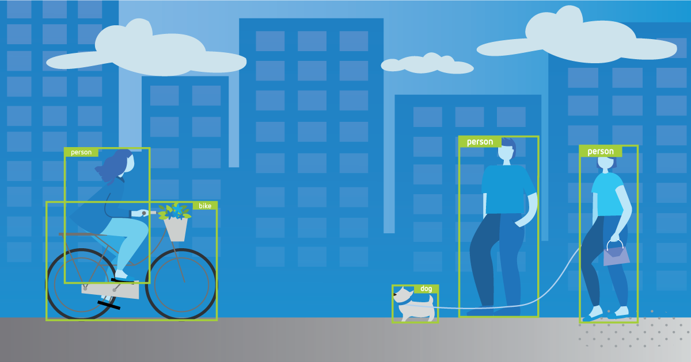
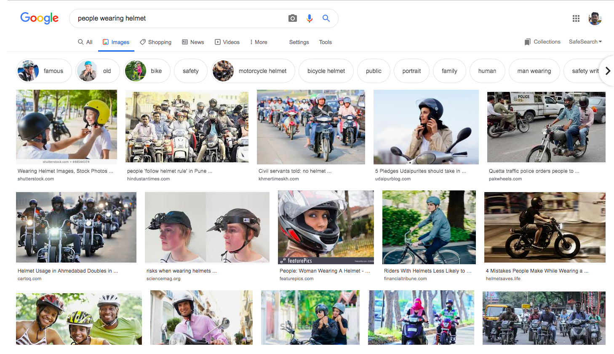
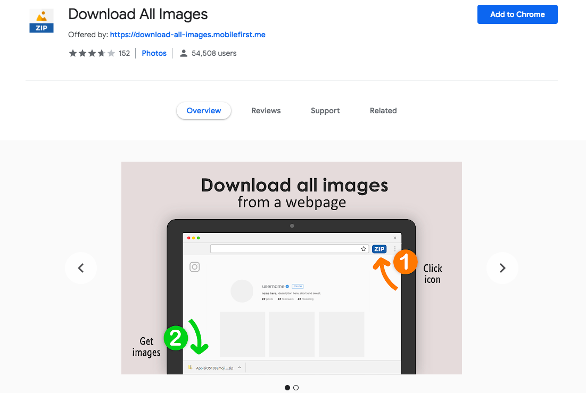
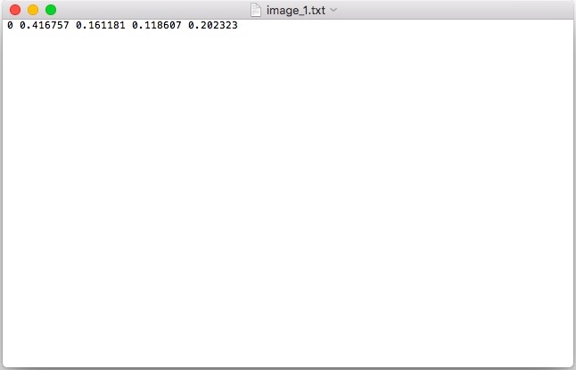

Preparing Custom Dataset for Training YOLO Object Detector

Source: Tryo labs
In an earlier post, we saw how to use a pre-trained YOLO model with OpenCV and Python to detect objects present in an image. (also known as running 'inference')
As the word 'pre-trained' implies, the network has already been trained with a dataset containing a certain number of classes (object categories). For example, the model we used in the previous post was trained on the COCO dataset which contains images with 80 different object categories.
Basically somebody else trained the network on this dataset and made the learned weights available on the internet for everyone to use. In this case the trained weights for YOLO was from the original author of YOLO, Joseph Redmon. (Thanks Joseph!)
But what if you want to detect an object that is not part of the classes that the pre-trained model was trained on. Well, then you have to train the model with a dataset containing images with the object you are interested in. This involves a lot more work compared to just running inference with a pre-trained model.
I will be covering the end to end process of training a custom object detector with YOLO in a series of blog posts starting with this post.
1. Collecting dataset and annotating/labeling. (this post)
2. Installing DarkNet, setting up the environment and training.
3. Multiple ways of running YOLO inference.
Let's get started.
. . .
Gathering Data
One of the crucial parts of building machine learning systems is gathering high quality dataset. You can expect to spend significant amount of time on data. It is essential because our model is only as good as the data it learns from.
In this series, we will try build an object detector that is trained to detect people wearing 'helmets' in the scene.
So how do we teach a machine to detect helmets ? As you might have guessed, by showing a lot of examples.
There are various ways to collect data. When it comes to images, one of the easiest ways for an individual to collect images is to use Google Image Search.
Source: Google Image Search
But downloading the images show up in search results one by one manually is a tedious task. Luckily there are some tools to help. Came across a chrome extension called Download All Images which, as the name says, downloads all images present in a web page with a click of a button.
Scroll down on the search results page as much as you want. The tool will capture the images till the length you have scrolled. (Please look at the individual image sources for copyright related information)
Source: Chrome Web Store
There could be other ways to bulk download images from Google Search, this one seemed dead-simple.
Once the images are downloaded, be sure to go through them and remove any irrelevant images.
Labeling Data
Once we gather data, next step is to label / annotate them. In the context of object detection, labeling means drawing bounding boxes around the objects that we are interested in detecting in the images and associating them with corresponding object classes / categories so that we can show it to the machine clearly.

Source: DarkNet
{kind=link}
This is the most labor intensive part of the process. We need to go through the images one by one and label the objects in each image manually.
There are lot of tools available to help us annotate the images. One of the widely used Open Source tools is LabelImg.

Source: LabelImg
Good thing about LabelImg is, it lets us save the annotations directly into YOLO format. Some tools don't directly do that. We need to convert the annotations ourselves into the format YOLO requires.
You can easily install LabelImg with pip from the Terminal.
pip install labelimg
You might want to use pip3 if pip is linked to Python 2.x . You can check this using
pip --version
Once labelImg is successfully installed, launch it by typing
labelImg [path to image] [classes file]
[path to image] is the path to an image in the directory containing the downloaded helmet images we are going to label.
[classes file] is the file where we list the object classes that we are going to label. We haven't created it yet. Let's do that now.
Create a text file and add 'helmet' in the file. Since we are training for only this category thats all we need to add. If we are going to label 10 different objects, then we should all of them in this file.
Once the file is created, launch labelImg. For example,
labelImg /home/Downloads/helmet_images/image_1.jpg classes.txt
Once the window is opened, you can click 'Open Dir' button on the left panel and select the directory where all of the helmet images are saved. It will bring all of the images to labelImg so that we can go through one by one.
After all the images are loaded, we can start labeling the images.
Change the annotation format to YOLO from PASCAL VOC on the left panel before proceeding.
Keyboard shortcuts
W - to start creating bounding box
Ctrl + S - to save the bounding boxes and labels
D - next image
A - previous image
Complete list of shortcuts can be found here. But these are the shortcuts I found myself using frequently.
When you save the labels after each image with 'Ctrl + S', labelImg creates a text file for each image with the same name as the image. All the annotation details for that particular image is saved in that file.
For example 'image_1.jpg' will have a corresponding 'image_1.txt' in the same directory. (you can change the directory if you wish using 'Change Save Dir' in the left panel)
Saved annotations in YOLO format
If you are wondering what these cryptic numbers are, these are actually stored in a specific format usually known as 'YOLO format'.
object-id center_x center_y width height
object-id represents the number corresponding to the object category which we listed in 'classes.txt' earlier.
center_x and center_y represents the center point of the bounding box. But they are normalized to range between 0 and 1 by dividing by the width and height of the image.
For example, (0.25,0.75) is the point located at 25% of the width and 75% of the height. We can multiply this number (0.25,0.75) by the original width and height of the image to get the real point. In fact, we will be doing this at the end after inference to draw the predictions on the image.
Generally it is easier for the network to predict values between 0 and 1 than random coordinate values.
width and height represents the width and height of the bounding box. Again normalized to the range 0 to 1 dividing by the original width and height of the image.
The generated annotation text file will contain each line like the above for each bounding in the image and one text file for each image.
Creating necessary files
Apart from the annotations, there are few necessary files related to data which DarkNet expects for training. Let's create them now.
classes.names - this is same as the 'classes.txt' file which we used earlier with LabelImg containing the object categories (in our case just 'helmet') just with '.names' extension. So you can just reuse/rename the file to 'classes.names'.
train.txt - DarkNet expects a text file listing all the images that are going to be used for training. Generally people use 60-90% of the total dataset for training and keep the remaining for testing/validation. There is no real consensus here on the numbers. It varies depending on the situation.
In this series of posts, I will be using a small amount of data since I couldn't label so much. Feel free to change the split depending upon how much labeled data you have.
ls "$PWD/"*.jpg | head -100 > train.txt
I have a total of 120 images labeled (which is very less actually). So I am using 100 images for training and 20 images for validation. Go to the directory where you have the helmet images and run the above command. It should create a text file listing the paths of the first 100 images in the directory. (Feel free to change the number as you see fit)
test.txt - this file will have the list of the images that will be used for validation.
ls "$PWD/"*.jpg | tail -20 > test.txt
Go to the directory where you have the helmet images and run the above command. It should create a text file listing the paths of the last 20 images in the directory. (Again, feel free to change the number as you see fit)
Once these text files are created you can move them from the images directory to appropriate place in the project directory you are working on or you can just leave it there.
obj.data - this file will contain the following lines.
classes= 1
train = /path/to/train.txt
valid = /path/to/test.txt
names = /path/to/classes.names
backup = backup/
First line is the number of object classes that we are training the network to detect. 'backup' is the place where DarkNet will save the trained weights for us.
Summary
In this post, we looked at collecting data for a particular object (helmet), annotating them using labelImg, what do the values in the annotation file actually means, created train / test split and we also created necessary files in the format DarkNet expects to train the YOLO model.
I hope you enjoyed today's post. In the next post, I'll explain how to actually train the object detection model (YOLO) using DarkNet. Be sure to subscribe to get notified when the next post is published.
Feel free to share your thoughts in the comments or you can reach out on twitter @ponnusamy_arun.
Cheers.
Recent posts
YOLO Object Detection with OpenCV and Python
CNN based face detector from dlib
Setting up deep learning environment the easy way on macOS High Sierra